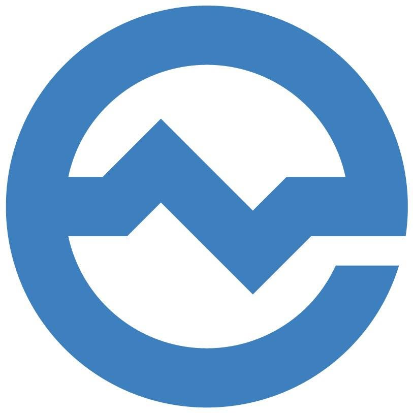
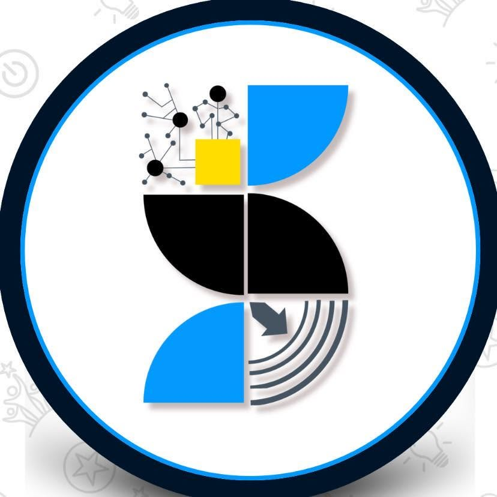

Leadership & Organizations

UP Engineering Student Council
EEE Representative
- Serves as the liaison between the students and administration of the UP Electrical and Electronics Engineering Institute (EEEI).
- Publicity head of Engineering Week 2026, showcasing the diverse talents of the Engineering community through events and games.

UP Engineering Radio Guild
Member
- Serves as the liaison between the students and administration of the UP Electrical and Electronics Engineering Institute (EEEI).
- Publicity head of Engineering Week 2026, showcasing the diverse talents of the Engineering community through events and games.

UP DOST Scholars' Association
Member
- Coordinated the Project WISKO initiative with NADS, conducting mock exams for the 2025 DOST Undergraduate Scholarship.
- As Logistics Head for Scholars' Day Out, was responsible for managing supplier databases, tracking inventory, and coordinating the distribution of food and supplies for a seamless campus tour.

START DOST
Deputy Chief Communications Officer for Sponsorships & Media
- Secured sponsors and partners for KickSTART and TechSTART 2026, initiatives equipping DOST scholars nationwide with knowledge in modern technology.

NCR Alliance of DOST Scholars
Officer
- Created and managed databases of company details for potential partnerships as an External Affairs Committee officer.
- Headed the Sponsorships and Partnerships Committee of the 2025 Scholars Colloquium to foster research excellence and innovation.